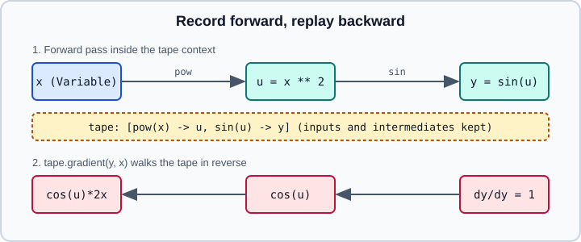

Automatic Differentiation with GradientTape
|
This content was generated with the assistance of AI and should be verified against the official documentation before being relied on in production. |
Training a model means following the gradient of a loss with respect to its parameters. TensorFlow computes these gradients with reverse-mode automatic differentiation through tf.GradientTape: operations executed inside the tape context are recorded, and tape.gradient replays them backwards. This page covers the basics (watching, targets, sources, persistent tapes), the standard reasons a gradient comes back as None, and the advanced tools: higher-order gradients, Jacobians and Hessians, tf.stop_gradient, and tf.custom_gradient. The conceptual background is on Backpropagation and Automatic Differentiation; the PyTorch counterpart is Autograd Fundamentals with Higher-order Gradients and torch.func and Custom Autograd Functions.
Related pages: Variables (what the tape watches), Graphs, tf.function, AutoGraph & Retracing (compiling the gradient step), A Training Loop with TF Core and Writing a Training Loop from Scratch (where the tape is used in practice). It targets Python 3.13 and TensorFlow 2.21 with Keras 3.15 (TensorFlow 2.22 is labelled "upcoming" and not covered), checked against the official documentation on 2026-10-30. Examples were run on Python 3.13 with TensorFlow 2.21 and Keras 3.15 (CPU) on 2026-10-31.
How the tape works

Inside with tf.GradientTape() as tape: each operation that involves a watched tensor is appended to the tape together with the intermediate values its derivative needs. tape.gradient(target, sources) then walks the record in reverse, multiplying local derivatives (the chain rule). Because the tape is built while the Python code runs, ordinary Python control flow works in eager mode: only the operations that actually executed are recorded.
import tensorflow as tf
x = tf.Variable(3.0)
with tf.GradientTape() as tape:
y = x ** 2
dy_dx = tape.gradient(y, x)
print(dy_dx) # tf.Tensor(6.0, shape=(), dtype=float32)
# sources may be a tensor, a list, or a dict; the result mirrors the structure
w = tf.Variable(tf.random.normal((3, 2)), name="w")
b = tf.Variable(tf.zeros(2), name="b")
inp = tf.constant([[1.0, 2.0, 3.0]])
with tf.GradientTape() as tape:
pred = inp @ w + b
loss = tf.reduce_mean(pred ** 2)
grads = tape.gradient(loss, {"w": w, "b": b})
print(grads["w"].shape, grads["b"].shape) # (3, 2) (2,)Each gradient has the shape and dtype of its source. For a Keras model the sources are usually model.trainable_variables.
What the tape watches
-
By default the tape automatically watches every trainable
tf.Variablethat is read inside the context. Non-trainable variables and plain tensors are not watched. -
To differentiate with respect to a constant or an intermediate tensor, call
tape.watch(t)first. -
tape.watched_variables()lists the variables the tape picked up, which is a quick way to debug a missing gradient. -
GradientTape(watch_accessed_variables=False)turns off automatic watching, so only tensors you pass towatchare tracked. Use it when you want gradients for one subset of the parameters and do not want the tape to store intermediates for the rest.
x = tf.constant(2.0) # a constant: not watched automatically
with tf.GradientTape() as tape:
y = x * x
print(tape.gradient(y, x)) # None: x was never watched
with tf.GradientTape() as tape:
tape.watch(x)
y = x * x
print(tape.gradient(y, x)) # tf.Tensor(4.0, ...)
# Explicit watching only
v1, v2 = tf.Variable(1.0), tf.Variable(2.0)
with tf.GradientTape(watch_accessed_variables=False) as tape:
tape.watch(v1)
y = v1 * v2
g1, g2 = tape.gradient(y, [v1, v2])
print(g1, g2) # 2.0, None (v2 was not watched)Persistent tapes and memory
By default the tape’s resources are released as soon as gradient() is called, so a second call raises an error. Create tf.GradientTape(persistent=True) when you need several gradients from the same forward pass, and delete it afterwards (del tape) because it keeps every recorded intermediate alive and raises peak memory.
x = tf.constant(3.0)
with tf.GradientTape(persistent=True) as tape:
tape.watch(x)
y = x * x
z = y * y
dz_dx = tape.gradient(z, x) # 4 * x**3 = 108.0
dy_dx = tape.gradient(y, x) # 2 * x = 6.0
del tape # release the recorded intermediatesKeep the tape context as small as possible: put only the forward computation and the loss inside it, and call tape.gradient outside the with block, otherwise the gradient computation itself is recorded and costs extra memory. tape.stop_recording() suspends recording for a block of code inside the context, and tape.reset() discards everything recorded so far.
Non-scalar targets and unconnected sources
Gradients are defined for scalar targets. If the target is a tensor with more than one element (or you pass several targets), gradient returns the gradient of the sum of the targets. For an element-wise function such as y = x ** 2 that gives each element’s derivative with respect to its own input, which is why the call looks like it computes a per-element derivative. If you need the true derivative of every output with respect to every input, use jacobian (below).
A source that the target does not depend on gives None. To get zeros instead, which is often easier for optimizers and for summing, pass unconnected_gradients:
x = tf.Variable(2.0)
y = tf.Variable(3.0)
with tf.GradientTape(persistent=True) as tape: # persistent: gradient() is called twice
z = x * x # y is unused
print(tape.gradient(z, [x, y])) # [4.0, None]
print(tape.gradient(z, [x, y], unconnected_gradients=tf.UnconnectedGradients.ZERO)) # [4.0, 0.0]
del tapeWhy a gradient is None
A None gradient does not raise an error, it silently drops that parameter from training, so recognizing the causes is important. The official guide lists these:
-
A variable was replaced by a tensor, for example
x = x + 1rebindsxto a plain tensor; update variables withx.assign_add(1). -
The computation left TensorFlow, for example a NumPy call in the middle of the forward pass, so the tape cannot see through it (see NumPy Interop & tf.experimental.numpy).
-
The dtype is an integer or string: only floating-point (and complex) tensors are differentiable. Cast labels and indices deliberately.
-
A stateful read blocks the path: results that flow through
assignor through stateful objects such astf.dataiterators and queues do not carry gradients back. -
Control flow: gradients flow only through the branch that actually ran, and the condition itself gets no gradient.
-
Some float operations have no registered gradient. In that case the tape raises a
LookupErrorrather than returningNone; the guide usestf.image.adjust_contrastas the example. Either reimplement the function with differentiable ops or register one withtf.RegisterGradient.
Keras optimizers warn ("Gradients do not exist for variables …") when some variables get None; treat that warning as a bug until proven otherwise.
Higher-order gradients
Nest tapes to differentiate a gradient. The inner tape’s gradient call happens inside the outer tape’s context, so it is recorded and can itself be differentiated.
x = tf.Variable(1.0)
with tf.GradientTape() as outer:
with tf.GradientTape() as inner:
y = x ** 3
dy_dx = inner.gradient(y, x) # 3 * x**2 = 3.0
d2y_dx2 = outer.gradient(dy_dx, x) # 6 * x = 6.0
print(dy_dx.numpy(), d2y_dx2.numpy()) # 3.0 6.0Nested gradient calls only give second derivatives of a scalar. For the full matrix of second derivatives use jacobian on the gradient, as in the Hessian below. Applications are gradient penalties (WGAN-GP), meta-learning and Newton-style optimization.
Jacobians and Hessians
tape.jacobian(target, sources) returns the derivative of every element of a (single) target tensor with respect to every element of the sources. The result has shape target.shape + source.shape, and summing over the target dimensions recovers what gradient returns.
layer = tf.keras.layers.Dense(5, activation="relu")
x = tf.random.uniform((7, 3))
with tf.GradientTape() as tape:
y = layer(x) # (7, 5)
jac = tape.jacobian(y, layer.kernel) # shape (7, 5, 3, 5)
print(jac.shape)
# Per-example Jacobians: only the batch dimension is matched, not checked for independence
with tf.GradientTape() as tape:
tape.watch(x)
y = layer(x)
bj = tape.batch_jacobian(y, x) # shape (7, 5, 3)
print(bj.shape)batch_jacobian is cheaper than jacobian but only valid when example i of the output depends only on example i of the input; it checks that the first dimension matches, not independence. Layers that mix examples, such as batch normalization in training mode, give wrong answers with the right shape. Both functions use vectorized internals ("pfor") by default (experimental_use_pfor=True in their signatures); passing experimental_use_pfor=False falls back to a slower tf.while_loop, optionally with parallel_iterations, which can help when an op has no vectorized implementation.
A Hessian is the Jacobian of a gradient:
w = tf.Variable(tf.random.normal((3, 2)))
x = tf.random.normal((8, 3))
with tf.GradientTape() as outer:
with tf.GradientTape() as inner:
loss = tf.reduce_mean((x @ w) ** 2)
g = inner.gradient(loss, w) # (3, 2)
h = outer.jacobian(g, w) # (3, 2, 3, 2)
n = w.shape.num_elements()
h_mat = tf.reshape(h, (n, n)) # flatten to an (n, n) matrix
step = tf.linalg.solve(h_mat + 1e-3 * tf.eye(n), tf.reshape(g, (n, 1))) # damped Newton stepThe Hessian has \(N^2\) entries for \(N\) parameters, so this is practical only for small models. For large models use Hessian-vector products with nested tapes (differentiate the dot product of the gradient with a vector) instead of materializing the matrix, and solve the Newton system rather than inverting the Hessian. The guide also points to forward-mode differentiation for Jacobian-vector products via tf.autodiff.ForwardAccumulator; it is not covered by the two guides cited here, so check its API page. See Gradient Descent and Optimization for why second-order methods are rare in deep learning.
stop_gradient
tf.stop_gradient(t) returns t unchanged in the forward pass but blocks gradient flow along that path. It is the tool for targets that must be treated as constants (the bootstrapped target in Q-learning, the teacher in distillation, an exponential moving average target) and for straight-through estimators.
x = tf.Variable(2.0)
with tf.GradientTape(persistent=True) as tape:
y = x * x
z = tf.stop_gradient(y) * x # y is a constant for differentiation: z = c * x
print(tape.gradient(z, x)) # 4.0 (only the explicit x), not 12.0
print(tape.gradient(z, y)) # None: the path through y is cut
del tape
# Straight-through estimator: round forward, identity backward
def round_ste(v):
return v + tf.stop_gradient(tf.round(v) - v)The straight-through idiom v + tf.stop_gradient(f(v) - v) has the value of f(v) and the gradient of the identity; quantization-aware training uses it (see Model Compression). The guide demonstrates the None result for a source that is only reachable through the stopped path.
custom_gradient
@tf.custom_gradient lets you define the backward pass of a function. The decorated function returns (output, grad_fn), where grad_fn(upstream) receives the gradient of the loss with respect to the output and returns the gradients with respect to the inputs. Reasons to use it: numerical stability, saving forward results for reuse, clipping gradients, or differentiating through a non-differentiable step.
@tf.custom_gradient
def clip_gradient_norm(x):
def grad(upstream):
return tf.clip_by_norm(upstream, 0.5) # one gradient per input
return tf.identity(x), grad
x = tf.Variable([10.0, 10.0])
with tf.GradientTape() as tape:
y = tf.reduce_sum(clip_gradient_norm(x) * 3.0)
print(tape.gradient(y, x)) # clipped to norm 0.5: about [0.354, 0.354]
# Stable log(1 + exp(x)): the naive gradient overflows for large x
@tf.custom_gradient
def log1pexp(x):
e = tf.exp(x)
def grad(upstream):
return upstream * (1 - 1 / (1 + e))
return tf.math.log(1 + e), gradRules and pitfalls:
-
grad_fnmust return as many gradients as the function has tensor inputs. When the function closes over variables, it receives them through avariableskeyword argument and must return a pair(input_grads, variable_grads); check the API reference for the exact signature. -
The gradient function runs inside the tape’s backward walk. If you want second derivatives through it, it must itself be built from differentiable TensorFlow ops.
-
tf.custom_gradientis local to the call site. To attach a gradient to a graph operation by name, usetf.RegisterGradient; that registry is global, so it can surprise other code in the process. -
To export a model with custom gradients in a SavedModel, pass
tf.saved_model.SaveOptions(experimental_custom_gradients=True); the gradient function must be traceable (see SavedModel & Signatures).
Gradients inside tf.function
Wrapping the whole training step, tape included, in tf.function is the normal way to run fast. The tape works the same inside a traced function, and the gradient ops are added to the graph. Two details matter: persistent tapes and Python-side state follow the tracing rules of Graphs, tf.function, AutoGraph & Retracing, and a None gradient is detected at trace time, so the warning appears once rather than per step. Mixed precision adds loss scaling around the tape; see Mixed Precision.
model = tf.keras.Sequential([tf.keras.layers.Dense(1)])
opt = tf.keras.optimizers.SGD(0.1)
model.build((None, 3))
@tf.function
def train_step(x, y):
with tf.GradientTape() as tape:
loss = tf.reduce_mean(tf.square(model(x, training=True) - y))
grads = tape.gradient(loss, model.trainable_variables)
opt.apply(grads, model.trainable_variables) # Keras 3 optimizer API
return loss
x = tf.random.normal((16, 3))
y = tf.random.normal((16, 1))
print(float(train_step(x, y))) # a loss value, e.g. 1.37Keras 3 optimizers take opt.apply(grads, variables); the Keras 2 style apply_gradients(zip(grads, variables)) is still available in Keras 3.15 as apply_gradients(grads_and_vars) and does the same update; see Optimizers & Learning-Rate Schedules for the full optimizer API.
References
-
TensorFlow guide, Introduction to gradients and automatic differentiation: https://www.tensorflow.org/guide/autodiff
-
TensorFlow guide, Advanced automatic differentiation: https://www.tensorflow.org/guide/advanced_autodiff
-
TensorFlow API,
tf.GradientTape: https://www.tensorflow.org/api_docs/python/tf/GradientTape -
TensorFlow API,
tf.custom_gradient: https://www.tensorflow.org/api_docs/python/tf/custom_gradient -
TensorFlow API,
tf.stop_gradient: https://www.tensorflow.org/api_docs/python/tf/stop_gradient -
TensorFlow API,
tf.autodiff.ForwardAccumulator: https://www.tensorflow.org/api_docs/python/tf/autodiff/ForwardAccumulator -
Keras optimizers API: https://keras.io/api/optimizers/